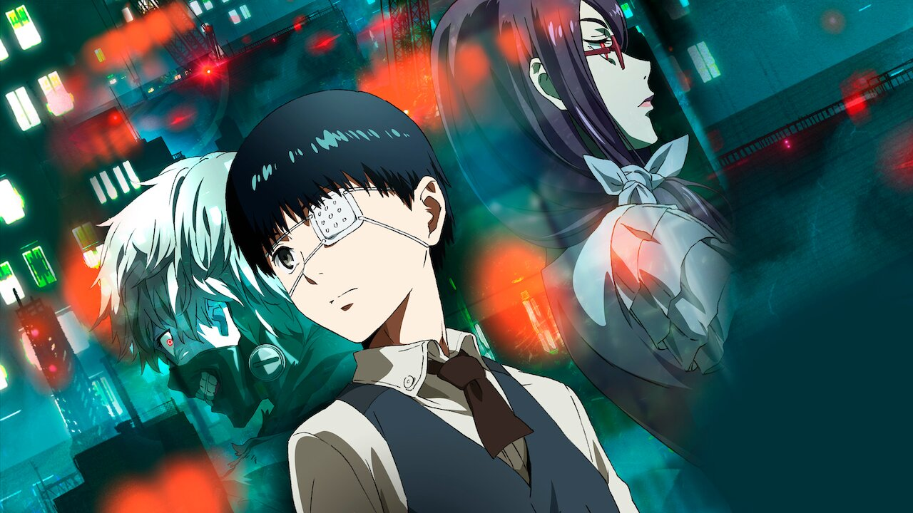

The longest-running anime has over 7500 episodes. Sazae-san has over 7500 episodes, but each is only about six minutes long. If you aren’t impressed, Manga Nippon Mukashibanashi has over 1400 episodes of about 25 minutes each. Whichever you decide to watch, it will take you more than three weeks to finish the series if you watch non-stop.
One anime character has 22 different voice actresses. Eucliwood Hellscyth from Is This a Zombie? has 22 voice actresses in 22 episodes. The character rarely speaks but when she does, each time she has a different voice.
Anime is not the same as “cartoon,” contrary to popular belief. With complicated stories and deep character development, anime avoids the label of cartoon and makes claims on being a higher art-form.
In Japan, more paper is used to print manga than toilet paper.
In Japan, it’s common that after someone finishes a manga volume, they’ll just leave it somewhere for someone to pick it up.
The highest grossing anime film of all time is Your Name. This film brought in more than $355 million world wide.
Animated Japanese films and television shows account for 60% of the world’s animation-based entertainment.
Anime is meant for all ages. While many people assume that anime is for children, it addresses many underlying social issues and themes fit for adults.
The anime Space Brothers includes a voice actor that recorded in outer space.
Spirited Away was the first anime film to be nominated for and win an academy award.


